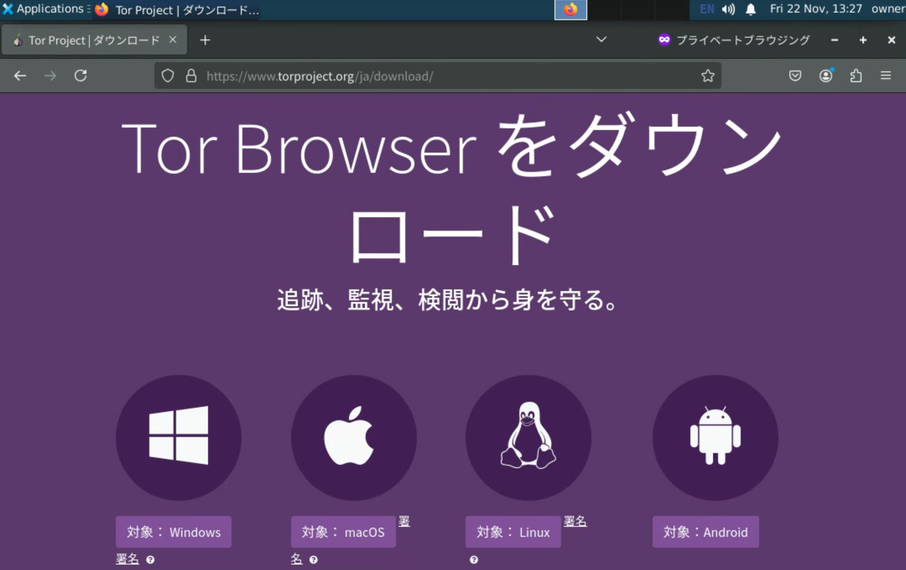
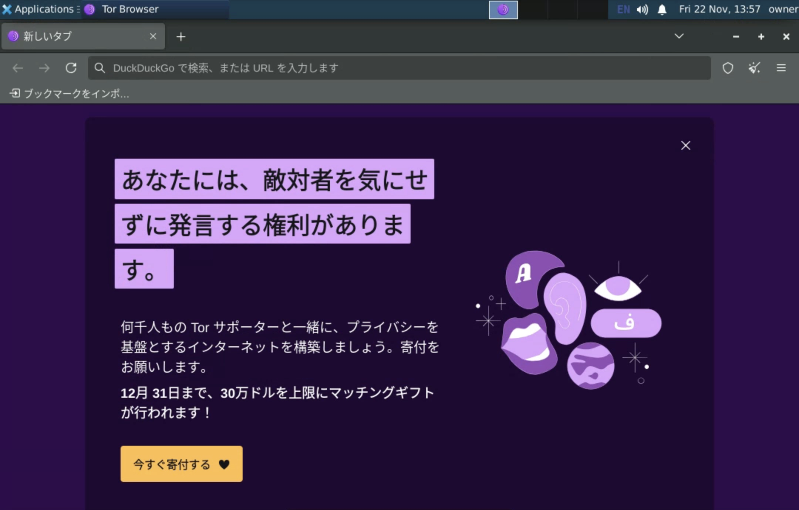
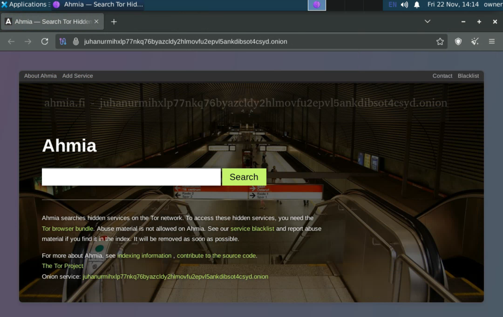
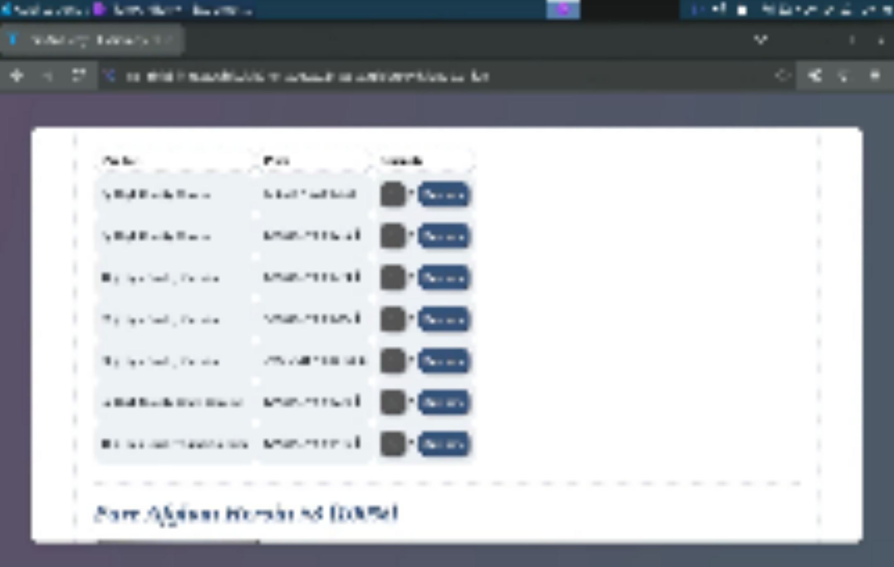

ダークウェブの中に入ってみた！
どうも！ The Infinity’sです！
暇なのでダークウェブに入ってみたいと思います！
ダークウェブとは
日本語でいう「闇サイト」というもので、
Tor という技術を活用したりした
非常に匿名性の高いwwwのことです。
政治的な理由で抑圧されていたり、
検閲を受けたりしているところからでも、
自由にネットワークにアクセスすることができます。
また、匿名性の高さを利用して、個人情報や違法薬物の売買等にも使用されています。
実際に繋げてみた
⚠︎⚠︎⚠︎⚠︎⚠︎⚠︎⚠︎⚠︎⚠︎⚠︎⚠︎⚠︎⚠︎⚠︎⚠︎⚠︎
以後の手順に従って何かしらの不利益を被った如何なる場合でも
私は責任を負いません。
自己責任でお願いします。
⚠︎⚠︎⚠︎⚠︎⚠︎⚠︎⚠︎⚠︎⚠︎⚠︎⚠︎⚠︎⚠︎⚠︎⚠︎⚠︎
1. VPNやプロキシを接続する(推奨)
これをすることでTor側に対してIPアドレスを隠すことが出来ます。
(VPNやプロキシ側には隠せないので注意)
2. Infinity Docker Desktopを準備する(任意)
Infinity Docker Desktop
は、Dockerコンテナ内に
独立したデスクトップ環境を作成できます。
これによってお手元の環境とダークウェブに接続する環境を隔離して、
安全性を上げられます。
(出来れば仮想マシンを用意できると尚良い)

3. Torブラウザをインストールする
(以後の操作はInfinity Docker Desktopで動かした際を想定しています。)
先ず、ブラウザを開いて…
Tor Browserをダウンロードします。


そしてインストールします。
参考までにInfinity Docker Desktopでインストールする際のコマンドをお見せします。
4. Torブラウザを使う

こんな感じで起動することができます！
実際にオニオンルーティングが機能しているか確認してみましょう！

これを見れば分かると思いますが…IPアドレスが変わっています
実際にダークウェブのサイトを覗いてみましょう！
ダークウェブの検索エンジン
これはDuckDuckGoですね

そしてこれはAhimaというものです。
⚠閲覧注意⚠
感想
はい、滅茶苦茶楽しかったです()
一応気をつけないと行けない点として、
法律の遵守等があります。
(まぁ見てるだけでしたら引っかかることは殆どないので安心してください)
それとウイルス対策をしっかり()
 Copy To ClipBoard
Copy To ClipBoard
 Share On X
Share On X